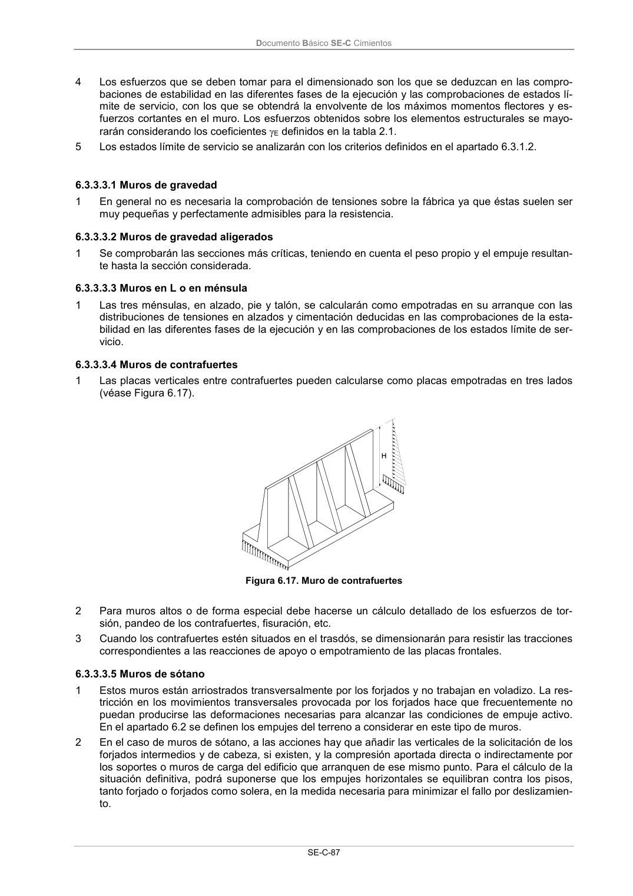

DB-SE-C Cimientos · edición 2019-12-20 · capa oficial
Documento DB-SE-C-oficial · SHA-256 del PDF a71133f4b0dca253e45ea3071c70f2a512354bcc5cd841bf89b1a502f567ac5e
Página física 92 de 165.
Copia fiel del PDF fuente · Fuente oficial
Ficha de la disposición en la fuente oficial
Formato: Texto de la página (Markdown)
Documento Básico SE-C Cimientos SE-C-87 4 Los esfuerzos que se deben tomar para el dimensionado son los que se deduzcan en las compro- baciones de estabilidad en las diferentes fases de la ejecución y las comprobaciones de estados lí- mite de servicio, con los que se obtendrá la envolvente de los máximos momentos flectores y es- fuerzos cortantes en el muro. Los esfuerzos obtenidos sobre los elementos estructurales se mayo- rarán considerando los coeficientes E definidos en la tabla 2.1. 5 Los estados límite de servicio se analizarán con los criterios definidos en el apartado 6.3.1.2. 6.3.3.3.1 Muros de gravedad 1 En general no es necesaria la comprobación de tensiones sobre la fábrica ya que éstas suelen ser muy pequeñas y perfectamente admisibles para la resistencia. 6.3.3.3.2 Muros de gravedad aligerados 1 Se comprobarán las secciones más críticas, teniendo en cuenta el peso propio y el empuje resultan- te hasta la sección considerada. 6.3.3.3.3 Muros en L o en ménsula 1 Las tres ménsulas, en alzado, pie y talón, se calcularán como empotradas en su arranque con las distribuciones de tensiones en alzados y cimentación deducidas en las comprobaciones de la esta- bilidad en las diferentes fases de la ejecución y en las comprobaciones de los estados límite de ser- vicio. 6.3.3.3.4 Muros de contrafuertes 1 Las placas verticales entre contrafuertes pueden calcularse como placas empotradas en tres lados (véase Figura 6.17). Figura 6.17. Muro de contrafuertes 2 Para muros altos o de forma especial debe hacerse un cálculo detallado de los esfuerzos de tor- sión, pandeo de los contrafuertes, fisuración, etc. 3 Cuando los contrafuertes estén situados en el trasdós, se dimensionarán para resistir las tracciones correspondientes a las reacciones de apoyo o empotramiento de las placas frontales. 6.3.3.3.5 Muros de sótano 1 Estos muros están arriostrados transversalmente por los forjados y no trabajan en voladizo. La res- tricción en los movimientos transversales provocada por los forjados hace que frecuentemente no puedan producirse las deformaciones necesarias para alcanzar las condiciones de empuje activo. En el apartado 6.2 se definen los empujes del terreno a considerar en este tipo de muros. 2 En el caso de muros de sótano, a las acciones hay que añadir las verticales de la solicitación de los forjados intermedios y de cabeza, si existen, y la compresión aportada directa o indirectamente por los soportes o muros de carga del edificio que arranquen de ese mismo punto. Para el cálculo de la situación definitiva, podrá suponerse que los empujes horizontales se equilibran contra los pisos, tanto forjado o forjados como solera, en la medida necesaria para minimizar el fallo por deslizamien- to.
